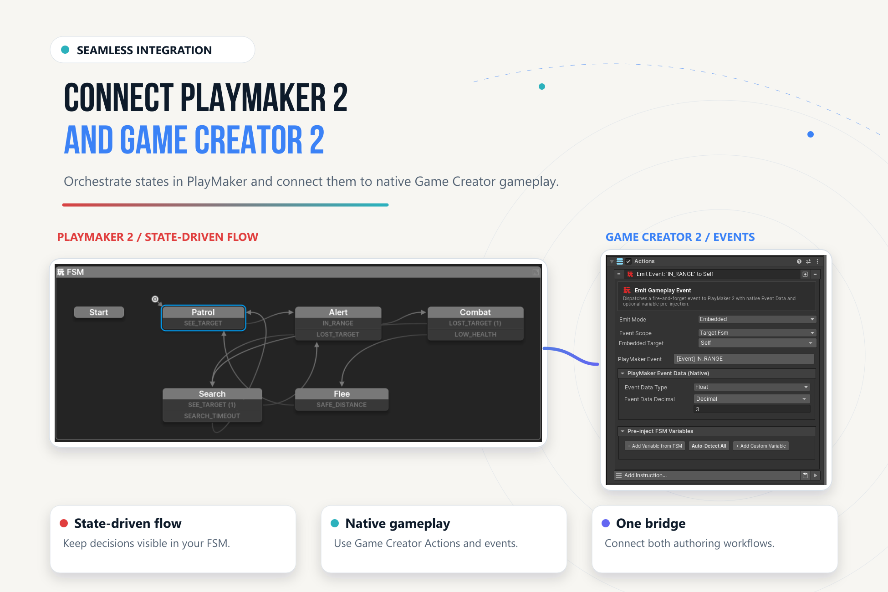

State in PlayMaker.
Gameplay in Game Creator.
Connect your state machines to native Actions, Conditions, Properties, and Signals—with explicit control over context, data, and execution.
PlayMaker 2 Integration for Game Creator 2 connects PlayMaker's state machines with native Game Creator 2 gameplay. An FSM decides which behavior should run; GC2 performs the authored gameplay work. Both tools keep their own graphs and data ownership.
Your First Connection#
- GC2 interactionA native Trigger sends
Interactto a named FSM. - PlayMaker stateThe door moves from
ClosedtoOpening. - GC2 routine
Run GC2 Actionsexecutes the opening behavior and waits. - PlayMaker completionThe completion event moves the FSM to
Open.
Start with the door walkthrough, then inspect the six reference scenes.
What You Can Build#
Native gameplay from FSMs
Run GC2 Actions or inline Instructions; branch on native Conditions.
FSM-aware GC2 logic
Send events, inspect states, wait for completion, and read typed FSM variables.
Explicit data access
Read and write on demand, transfer lists, or opt into Property Binder synchronization.
Events with a clear destination
Use local events, GC2 Signals, or typed Gameplay Events.
Reusable FSM routines
Expose typed inputs, outputs, completion rules, and execution policies to GC2.
One integration workspace
Discover capabilities, scaffold templates, inspect relationships, and diagnose execution.

Choose a Learning Path#
| Your goal | Start here | Continue with |
|---|---|---|
| Make your first connection | Getting Started | Examples |
| Reuse GC2 gameplay in a state | PlayMaker → GC2 | Context mapping |
| Drive an FSM from GC2 | GC2 → PlayMaker | Callable Routines |
| Share gameplay data | Variables & Property Binder | Singletons & Utilities |
| Diagnose a connection | Integration Workspace | Troubleshooting |
| Extend with C# | Scripting API | Compatibility |
Requirements at a Glance#
Install Game Creator 2 Core and PlayMaker 2 before importing the integration. Optional GC2 modules add capabilities when installed; they are not required for the Core door example.
This site documents v1.1.3. The original qualified baseline uses Unity 6000.4.6f1, GC2 Core 2.18.60, and PlayMaker 2.0.0-beta.80. Later focused checks ran on Unity 6000.6.0f1. See Compatibility for the distinction and Changelog for the release history.